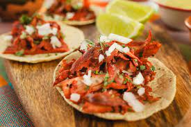

Taco de Pastor

The best firend of Mexicans:'Taco de Pastor'. Les't go
Ingredients
- Marinated pork meat (usually made with a mix of spices)
- Small corn tortillas
- Pineapple slices
- Chopped onions
- Fresh cilantro leaves
- Lime wedges
- Salsa (salsa verde or salsa roja, as preferred)
Steps:
- Start by marinating the pork meat with a blend of spices, allowing the flavors to infuse for a few hours or overnight.
- Cook the marinated pork meat on a grill, rotating and slicing it as it cooks for that signature "al pastor" style.
- Warm the small corn tortillas on the grill or in a pan until they are pliable.
- Assemble the tacos by placing slices of cooked pork onto each tortilla.
- Add a slice of pineapple, a sprinkle of chopped onions, and a few fresh cilantro leaves.
- Squeeze a lime wedge over the taco to enhance the flavors.
- Top with your preferred salsa, whether it's salsa verde or salsa roja.
- Repeat the process for as many tacos as desired.
- Serve the "Taco de Pastor" immediately while they are still warm.
- Enjoy the delicious and authentic flavors of Mexico!
Back to main menu